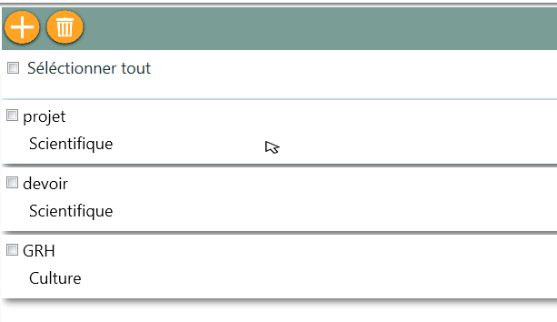

1- Saisir le pseudonyme
2- Saisir le mot de passe
exemple
Nom d'utilisateur : mon_pseudo
Mot de passe : mon_mot_de_passe
3- Cliquer sur le bouton "Se connecter"

1- Cliquer sur le bouton s'inscrire dans la fenêtre de connexion
2- vous aurrez une nouvelle fenêtre d inscription
3- remplissez les champs : Nom,Prénom,Pseudo et mot de passe
4- Cliquez sur le bouton s'inscrire et vous serez dirigés vers votre compte

le planning vous permet de voir vos tâches et vos événements dans un jour précis , une semaine ou un mois.
Pour faire la différence entre vos planifiables Tick Task vous affiche les tâches en bleu et les evenements en orange
Cliquez sur planning dans la barre du menu et choisissez :
1- Par jour:
Vos tâches et vos événements de la date choisie sont listés par leur heure
Exemple : Conférence commence à 9h et quelque et se termine à 10h

2- Par semaine : vous pouvez voir tout ce que vous avez planifié dans la semaine choisie par date et heure

3- Par mois :
Consultez vos planifiables d' un mois précis, ainsi Tick Task vous spécifie la date courrante par une couleur,voir la photo en dessous

Pour voir plus de détails sur vos planifiable vous faites un double clique sur l événement ou la tâche que vous voulez avoir plus d'information sur elle et vous aurez :


les activités vous aidant à regrouper vos tâches selon un type désigné :
1- Comment puis je voir mes activités ?
Cliquez sur Activités dans la barre du menu et vos activités seront affichées

2- Comment ajouter une nouvelle activité ?
Cliquez sur le bouton ajouter puis donnez la désignation et le type de votre activité

Si vous voulez un autre Type choissisez Autre et écrivez le type que vous désirez

Vous pouvez ajouter des tâches à votre activité lors de sa création en cliquant sur le bouton ajouter,une nouvelle fenêtre apparaitra pour remplir les caratéristiques de la tâche, pour plus d 'information voir Tâches.
Enfin,si vous voulez sauvegarder votre activité cliquez sur Valider ,sinon cliquez sur annuler
3- Comment modifier une activité ?
Cliquez sur le bouton modifier de l 'acitivité que vous voulez changer :


Faites les changements que vous désirez apporter à votre activité et cliquer sur valider si vous voulez sauvegarder les modifications sinon cliquez sur annuler
4- Comment supprimer une activité ?
Cliquez sur le bouton supprimer de l 'acitivité que vous souhaitez supprimer :

une demande de confirmation vous sera affichée :

si vous voulez vraiment supprimer l'activité cliquez sur oui,
si vous vous êtes trompés vous pouver anuller la suppression en cliquant sur non
Attention : si vous supprimez une activité vous risquez de perdre ses tâches associées,leur alerte et leurs documents.
5- Comment supprimer plusieurs activités en même temps
Sélectionnez les activités à supprimer puis cliquez sur le bouton suppression multiple :

Vous pouvez aussi sélectionner toutes vos activités en cochant sélectionner tout et les désélectionner en la décochant

un message de confirmation est affiché

si vous êtes sur de la suppression cliquez sur oui sinon vous pouvez annuler en cliquant sur non.
6- Qu' est ce que je fais si je trouve pas une activité déjà crée ?
Ne vous inquiétez pas TickTask vous offre une recherche selon la désignation et même selon le type, aussi vous n'êtes pas obligés de se mémoriser de toute la désignation ou le type, il vous suffira d'écrire les premières lettres seulement.
1- Choisissez le type de recherche
2- Ecrivez la désignation ou le type que vous cherchez
3- Cliquez sur le bouton rechercher vous pouvez voir le résultat affiché


1- Comment puis je voir mes Tâches ?
Faites un double clique sur l'actvité qui comprend les tâches que vous désirez consulter

2- Comment ajouter une nouvelle Tâche ?
Il y a deux façons pour ajouter une tâche :


Entrez la désignation, la priorité , la date ,l' heure du début et de fin puis cliquez sur valider si vous voulez la sauvegarder sinon annuler

Vous pouvez associer à votre tâche une alerte et des documents , pour plus d'information voir alertes et documents.
L'état de vos tâches est non réalisée par défaut vous pouvez le modifier apres la création ou à partir de l'état des tâches
3- Comment modifier une tâche ?
Cliquez sur le bouton modifier de la tâche que vous voulez changer :

Faites les changements que vous désirez apporter à votre tâche et cliquer sur valider si vous voulez sauvegarder les modifications sinon cliquez sur annuler
4- Comment supprimer une Tâche ?
Cliquez sur le bouton supprimer de la tâche que vous souhaitez supprimer
une demande de confirmation vous sera affichée :
si vous voulez vraiment supprimer la tâche cliquez sur oui,
si vous vous êtes trompés vous pouvez anuller la suppression en cliquant sur non
Attention : si vous supprimez une tâche vous risquez de perdre l'alerte et les documents associés à cette tâche.
5- Comment supprimer plusieurs tâches en même temps
Sélectionnez les tâches à supprimer puis cliquez sur le bouton suppression multiple :

Vous pouvez aussi sélectionner toutes vos tâches en cochant sélectionner tout et les désélectionner en la décochant

un message de confirmation est affiché
si vous êtes sur de la suppression cliquez sur oui sinon vous pouvez annuler en cliquant sur non.
6- Rechercher des tâches ?
TickTask vous permet de rechercher des tâches selon la désignation, la priorité et l'état, aussi vous n'êtes pas obligés de se mémoriser de toute la désignation,il vous suffira d'écrire les premières lettres seulement.
Exemple :
1- Choisissez le type de recherche
2- Ecrivez la désignation,l'état ou la priorité que vous cherchez
3- Cliquez sur le bouton rechercher et vous pouvez voir le résultat affiché


L'état des tâches vous permets de voir tout vos tâches du jour courant classées par leur état : non réalisée , en cours et réalisée
Vous pouvez aussi changer leur état en cliquant sur la tâche que vous désirez changer son état et la glisser vers une autre liste
Exemple :
1- Cliquez sur état des tâches dans la barre du menu

Cliquez sur la tâche dans la liste non réalisée et glissez cette dernière vers en cours

Si j'arriverais pas à réaliser tout mes tâches à leur temps alors comment je vais me souvenir d'eux pour les reprogrammer ? :
Tick Task ne vous rappelle pas seulement les tâches du jour courrant mais il vous offre la possibilité de voir vos tâches dont leur date est déjà passée mais leur état est non réalisée ou en cours


1- Comment puis je voir mes événements ?
Cliquez sur événement dans la barre du menu
2- Comment ajouter un nouveau événement ?
Cliquez sur le bouton ajouter un nouveau événement :
Entrez la désignation,le lieu , la date ,l' heure du début et de fin puis cliquez sur valider si vous voulez le sauvegarder sinon annuler

Vous pouvez associer à votre événement une alerte et des documents , pour plus d'information voir alertes et documents.
3- Comment modifier un événement ?
Cliquez sur le bouton modifier de l'événement' que vous voulez changer :

Faites les changements que vous désirez apporter à votre événement et cliquer sur valider si vous voulez sauvegarder les modifications sinon cliquez sur annuler
4- Comment supprimer un événement ?
Cliquez sur le bouton supprimer de l'événement que vous souhaitez supprimer
une demande de confirmation vous sera affichée :
si vous voulez vraiment supprimer l'événement cliquez sur oui,
si vous vous êtes trompés vous pouvez anuller la suppression en cliquant sur non
Attention : si vous supprimez un événement vous risquez de perdre l'alerte et les documents associés à cet événement.
5- Comment supprimer plusieurs événements en même temps
Sélectionnez les événements à supprimer puis cliquez sur le bouton suppression multiple :

Vous pouvez aussi sélectionner tout vos événements en cochant sélectionner tout et les désélectionner en la décochant

un message de confirmation est affiché
si vous êtes sur de la suppression cliquez sur oui sinon vous pouvez annuler en cliquant sur non.
6- Rechercher des événements ?
TickTask vous permet de rechercher des événements selon la désignation ou le lieu, aussi vous n'êtes pas obligés de se mémoriser de toute la désignation,il vous suffira d'écrire les premières lettres seulement.
Exemple :
1- Choisissez le type de recherche
2- Ecrivez la désignation ou le lieu que vous cherchez
3- Cliquez sur le bouton rechercher et vous pouvez voir le résultat affiché


Vous puvez associer des alertes à vos tâches et vos événements pour qu'elles vous rappelent de ces derniers
1- Comment puis je voir les alertes associées ?
Si vous avez ajouté une alerte à votre tâche ou événement vous pouvez la voir affichée avec les informations de votre planifiable
Alerte d'un événement :

2- Comment associer une alerte à une tâche ?
Vous pouvez ajouter une alerte lors de la création d'une nouvelle tâche ou lors de la modification d'une tâche déjà existante en cliquant sur le bouton ajouter alerte


Une nouvelle fen être est affichée :
1- Entrez la date et l'heure de l'alerte que vous désirez déclencher
2- Choisissez une sonnerie de déclenchement, elle devait être de type wav
3-Cliquer sur valider pour enregistrer votre alerte puis valider pour enregistrer votre tâche
Remarque : si vous ne sauvegardez pas votre tâche vous allez perdre l'alerte ajoutée

3- Comment associer une alerte à un événement ?
Vous pouvez ajouter une alerte lors de la création d'un nouvel événement ou lors de la modification d'un événement déjà existant en cliquant sur le bouton ajouter alerte


Une nouvelle fenêtre est affichée :
1- Entrez la date et l'heure de l'alerte que vous désirez déclencher
2- Choisissez une sonnerie de déclenchement, elle devait être de type wav
3-Cliquer sur valider pour enregistrer votre alerte puis valider pour enregistrer votre événement
Remarque : si vous ne sauvegardez pas votre événement vous allez perdre l'alerte ajoutée
4- Comment modifier une alerte ?
Vous pouvez modifier votre alerte en cliquant sur le bouton modifier l'alerte, voir l'image en dessus ( Comment puis je voir les alertes associées ?)
ou en cliquant sur le bouton modifier du planifiable(tâche ou événement) puis le bouton modifier l'alerte

Entrez les changements que vous désirez apporter à votre alerte puis cliquer sur valider
5- Comment supprimer une alerte ?
Cliquez sur le bouton supprimer l'alerte de votre planifiable (tâche ou événement), voir l'image en dessus( Comment puis je voir les alertes associées ?)
si vous êtes sur de la suppression cliquez sur oui sinon vous pouvez annuler en cliquant sur non.
le déclenchement d'une alerte
Quand le moment de votre alerte arrive la fenêtre en dessous appairaitera avec la sonnerie que vous avez choisis

6- Alors dois-je laisser mon compte toujours ouvert pour voir mes alertes ?
Non,TickTask déclenche vos alertes même si vous êtes déconnectés ou votre application est fermée.
1- Comment puis je voir mes documents associés ?
Faites un double clique sur votre tâche ou événement et vous pouvez voir tout les documents de votre planifiable


Aussi vous pouvez voir tout vos documents en cliquant sur document dans la barre du menu
2- Comment ajouter un nouveau document ?
il y'a deux façons pour ajouter un nouveau document
- Lors de la création d une nouvelle tâche ou un nouveau événement en cliquant sur le bouton ajouter un document


Une nouvelle feêtre est affichée :
Entrez le titre du document et son emlacement puis cliquez sur valider ensuite enregistrer votre plabifiable
Remarque : si vous anuller la sauvegarge de votre tâche ou événement vous risquez de perdre vos documents associés

- En entrant dans la liste des documents d'un planifiable existant (tâche ou événement) et cliquant sur le bouton ajouter
Exemple:
on veut ajouter un nouveau document à la tâche Tp poo
1- Faites un double clique sur la tâche
2- Cliquez sur le bouton ajouter un nouveau document
3-Entrez le titre et l'emplacement de votre document cliquez sur valider pour l'enregistrer


3- Comment modifier un document ?
Cliquez sur le bouton modifier du document que vous voulez changer :

Faites les changements que vous désirez apporter à votre document et cliquer sur valider si vous voulez sauvegarder les modifications sinon cliquez sur annuler

4- Comment supprimer un document ?
Cliquez sur le bouton supprimer du document que vous souhaitez supprimer

une demande de confirmation vous sera affichée :
si vous voulez vraiment supprimer le document cliquez sur oui,
si vous vous êtes trompés vous pouvez anuller la suppression en cliquant sur non
5- Comment supprimer plusieurs documents en même temps
Sélectionnez les documents à supprimer puis cliquez sur le bouton suppression multiple :

Vous pouvez aussi sélectionner tout vos documents en cochant sélectionner tout et les désélectionner en la décochant

un message de confirmation est affiché
si vous êtes sur de la suppression cliquez sur oui sinon vous pouvez annuler en cliquant sur non.
6- Ouvrir des documents ?
Pour voir vos documents
cliquez sur le bouton ouvrir du document que vous souhaitez consulter
7- Rechercher des édocuments ?
TickTask vous permet de rechercher les titres des documents seulement dans l'interface document qui est dans la barre du menu.
1-Ecrivez le nom du document que vous cherchez
2-Cliquer sur le bouton rechercher et vous pouvez voir le résultat de votre recherche
1- Comment puis je voir mes contacts ?
Cliquez sur carnet d'@ dans la barre du menu

2- Comment ajouter un nouveau contact ?
Cliquez sur le bouton ajouter un nouveau contact :
Entrez les caractéristiques de votre contact,cliquez sur valider si vous voulez le sauvegarder sinon annuler


3- Comment modifier un contact ?
Cliquez sur le bouton modifier du contact que vous voulez changer :

Faites les changements que vous désirez apporter aux informations de votre contact et cliquez sur valider si vous voulez sauvegarder les modifications sinon cliquez sur annuler

4- Comment supprimer un contact ?
Cliquez sur le bouton supprimer du contact que vous souhaitez supprimer
 une demande de confirmation vous sera affichée :
une demande de confirmation vous sera affichée :
si vous voulez vraiment supprimer le contact cliquez sur oui,
si vous vous êtes trompés vous pouvez anuller la suppression en cliquant sur non
5- Comment supprimer plusieurs contacts en même temps
Sélectionnez les contacts à supprimer puis cliquez sur le bouton suppression multiple :

Vous pouvez aussi sélectionner tout vos contacts en cochant sélectionner tout et les désélectionner en la décochant

un message de confirmation est affiché
si vous êtes sur de la suppression cliquez sur oui sinon vous pouvez annuler en cliquant sur non.
6- Rechercher des contactss ?
TickTask vous permet de rechercher des contacts selon leur nom,adresse,téléphone,E-mail et leur site web, aussi vous n'êtes pas obligés de se mémoriser de tout le nom, il vous suffira d'écrire les premières lettres seulement.
Exemple :
1- Choisissez le type de recherche
2- Ecrivez le nom,l'adresses,le numéro de téléphone,l'e-mail ou le site web que vous cherchez
3- Cliquez sur le bouton rechercher et vous pouvez voir le résultat affiché


1- Cliquez sur paramètre se trouvant sur le menu
2- Vous pouvez modifier votre nom,prénom et même le pseudo
3- Vous pouvez changer votre mot de passe en écrivant l'ancien et le nouveau mot de passe
4- Cliquer sur enregistrer si vous voulez sauvegarder les modifications sinon cliquez sur annuler

Cliquez sur Se deconnecter se trouvant sur le menu et vous êtes déconnectés